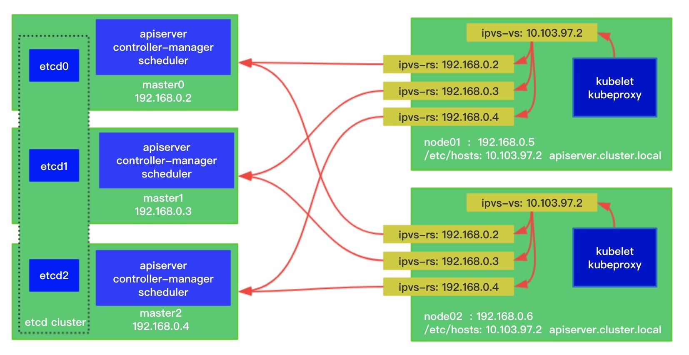

- 00 为什么我们要学习 Kubernetes 技术.md.html
- 01 重新认识 Kubernetes 的核心组件.md.html
- 02 深入理解 Kubernets 的编排对象.md.html
- 03 DevOps 场景下落地 K8s 的困难分析.md.html
- 04 微服务应用场景下落地 K8s 的困难分析.md.html
- 05 解决 K8s 落地难题的方法论提炼.md.html
- 06 练习篇：K8s 核心实践知识掌握.md.html
- 07 容器引擎 containerd 落地实践.md.html
- 08 K8s 集群安装工具 kubeadm 的落地实践.md.html
- 09 南北向流量组件 IPVS 的落地实践.md.html
- 10 东西向流量组件 Calico 的落地实践.md.html
- 11 服务发现 DNS 的落地实践.md.html
- 12 练习篇：K8s 集群配置测验.md.html
- 13 理解对方暴露服务的对象 Ingress 和 Service.md.html
- 14 应用网关 OpenResty 对接 K8s 实践.md.html
- 15 Service 层引流技术实践.md.html
- 16 Cilium 容器网络的落地实践.md.html
- 17 应用流量的优雅无损切换实践.md.html
- 18 练习篇：应用流量无损切换技术测验.md.html
- 19 使用 Rook 构建生产可用存储环境实践.md.html
- 20 有状态应用的默认特性落地分析.md.html
- 21 案例：分布式 MySQL 集群工具 Vitess 实践分析.md.html
- 22 存储对象 PV、PVC、Storage Classes 的管理落地实践.md.html
- 23 K8s 集群中存储对象灾备的落地实践.md.html
- 24 练习篇：K8s 集群配置测验.md.html
- 捐赠
08 K8s 集群安装工具 kubeadm 的落地实践
kubeadm 是 Kubernetes 项目官方维护的支持一键部署安装 Kubernetes 集群的命令行工具。使用过它的读者肯定对它仅仅两步操作就能轻松组建集群的方式印象深刻：kubeadm init 以及 kubeadm join 这两个命令可以快速创建 Kubernetes 集群。当然这种便捷的操作并不能在生产环境中直接使用，我们要考虑组件的高可用布局，并且还需要考虑可持续的维护性。这些更实际的业务需求迫切需要我们重新梳理一下 kubeadm 在业界的使用情况，通过借鉴参考前人的成功经验可以帮助我们正确的使用好 kubeadm。
首先，经典的 Kubernetes 高可用集群的架构图在社区官方文档中定义如下：

从上图架构中可知，Kubernetes 集群的控制面使用 3 台节点把控制组件堆叠起来，形成冗余的高可用系统。其中 etcd 系统作为集群状态数据存储的中心，采用 Raft 一致性算法保证了业务数据读写的一致性。细心的读者肯定会发现，控制面节点中 apiserver 是和当前主机 etcd 组件进行交互的，这种堆叠方式相当于把流量进行了分流，在集群规模固定的情况下可以有效的保证组件的读写性能。
因为 etcd 键值集群存储着整个集群的状态数据，是非常关键的系统组件。官方还提供了外置型 etcd 集群的高可用部署架构：

kubeadm 同时支持以上两种技术架构的高可用部署，两种架构对比起来，最明显的区别在于外置型 etcd 集群模式需要的 etcd 数据面机器节点数量不需要和控制面机器节点数量一致，可以按照集群规模提供 3 个或者 5 个 etcd 节点来保证业务高可用能力。社区的开发兴趣小组 k8s-sig-cluster-lifecycle 还发布了 etcdadm 开源工具来自动化部署外置 etcd 集群。
安装前的基准检查工作
集群主机首要需要检查的就是硬件信息的唯一性，防止集群信息的冲突。确保每个节点上 MAC 地址和 product_uuid 的唯一性。检查办法如下：
- 您可以使用命令
ip link或ifconfig -a来获取网络接口的 MAC 地址 - 可以使用
sudo cat /sys/class/dmi/id/product_uuid命令对 product_uuid 校验
检查硬件信息的唯一性，主要是为了应对虚拟机模板创建后产生的虚拟机环境重复导致，通过检查就可以规避。
另外，我们还需要确保默认的网卡是可以联网的，毕竟 Kubernetes 组件通过默认路由进行组网。
还有一个问题是在主流 Linux 系统中 nftables 当前可以作为内核 iptables 子系统的替代品。导致 iptables 工具充当了一层兼容层，nftables 后端目前还无法和 kubeadm 兼容，nftables 会导致生成重复防火墙规则并破坏 kube-proxy 的工作。目前主流系统如 CentOS 可以通过如下配置解决：
update-alternatives --set iptables /usr/sbin/iptables-legacy
检查端口
控制平面节点
| 协议 | 方向 | 端口范围 | 作用 | 使用者 |
|---|---|---|---|---|
| TCP | 入站 | 6443* | Kubernetes API 服务器 | 所有组件 |
| TCP | 入站 | 2379-2380 | etcd server client API | kube-apiserver, etcd |
| TCP | 入站 | 10250 | Kubelet API | kubelet 自身、控制平面组件 |
| TCP | 入站 | 10251 | kube-scheduler | kube-scheduler 自身 |
| TCP | 入站 | 10252 | kube-controller-manager | kube-controller-manager 自身 |
* 标记的任意端口号都可以被覆盖，所以您需要保证所定制的端口是开放的。
工作节点
| 协议 | 方向 | 端口范围 | 作用 | 使用者 |
|---|---|---|---|---|
| TCP | 入站 | 10250 | Kubelet API | kubelet 自身、控制平面组件 |
| TCP | 入站 | 30000-32767 | NodePort 服务** | 所有组件 |
** NodePort 服务的默认端口范围。
注意在企业部署集群的时候，大部分情况会初始化一个小规模集群来开局，所以外部单独配置 etcd 集群的情况属于特例。把 etcd 集群堆叠部署在控制面节点上是小规模集群的首选方案。
另外，Pod 容器网络插件会启用一些自定义端口，需要参阅他们各自的文档对端口要求进行规划。
安装容器运行时引擎
kubenet 并不能直接启动容器，所以集群节点机器需要统一部署容器运行时引擎。从 v1.6.0 版本起，Kubernetes 开始默认允许使用 CRI（容器运行时接口）。从 v1.14.0 版本起，kubeadm 将通过观察已知的 UNIX 域套接字来自动检测 Linux 节点上的容器运行时。下表中是可检测到的正在运行的 runtime 和 socket 路径。
| 运行时 | 域套接字 |
|---|---|
| Docker | /var/run/docker.sock |
| containerd | /run/containerd/containerd.sock |
| CRI-O | /var/run/crio/crio.sock |
如果同时检测到 Docker 和 containerd，则优先选择 Docker。目前业界已经在剥离 Docker，逐渐往 containerd 引擎靠拢，所以注意集群环境容器运行时引擎的升级。
安装 kubeadm、kubelet 和 kubectl
采用 kubeadm 安装集群时，它并不能管理 kubectl 工具的版本，需要集群管理员注意版本号的一致性，避免版本兼容性问题。 如果不这样做，则存在发生版本偏差的风险，可能会导致一些预料之外的错误和问题。
官方提供的组件安装方式是通过操作系统安装包系统如 yum 来管理，但是在国内实际的网络环境中，我们仍然面临下载失败的情况，为了统一的安装体验，建议提前下载相应的系统安装包，如无法获取可以直接采用二进制文件来部署。
通过运行命令 setenforce 0 和 sed ... 将 SELinux 设置为 permissive 模式可以有效的将其禁用。 这是允许容器访问主机文件系统所必须的，例如正常使用 Pod 网络。 您必须这么做，直到 kubelet 做出升级支持 SELinux 为止。
一些 RHEL/CentOS 7 的用户曾经遇到过问题：由于 iptables 被绕过而导致流量无法正确路由的问题。您应该确保在 sysctl 配置中的 net.bridge.bridge-nf-call-iptables 被设置为 1。
cat <<EOF > /etc/sysctl.d/k8s.conf
net.bridge.bridge-nf-call-ip6tables = 1
net.bridge.bridge-nf-call-iptables = 1
EOF
sysctl --system
确保在此步骤之前已加载了 br_netfilter 模块。这可以通过运行 lsmod | grep br_netfilter 来完成。要检查是否加载它，请调用 modprobe br_netfilter。
另外，kubelet 在控制平面节点上还需要注意对 cgroup 驱动程序支持情况，默认支持 cgroupfs，另外还有 systemd 驱动可以选择。因为主流操作系统对 systemd 支持，建议采用 containerd 引擎的用户通过配置切换到 systemd 驱动。
使用 kubeadm 安装高可用集群
为 kube-apiserver 创建负载均衡
因为工作节点和控制面节点之间是通过 kube-apiserver 来同步集群状态的，工作节点需要通过一个反向代理来把流量负载均衡到控制面集群中。一般的安装案例中，采用额外的 HAProxy 加 keeplived 来做请求流量的负载均衡。因为最新的 Linux 内核已经支持 IPVS 组件，可以实现内核态的流量代理，业界实践已经有通过动态维护 IPVS 规则来实现负载访问 apiserver。具体配置如图：

实践总结
Kubernetes 推出了很多安装解决方案，因为环境的差异化，让各种安装工具百花齐放，让用户选择起来很是困惑。kubeadm 算是一个在多种选型中比较突出的一个方案。因为采用了容器化部署方式，其运维难度要比二进制方式要大很多，在安装过程中还是会碰到版本不一致等问题，目前社区也在优化巩固这方面的功能稳定性，可以预见在不久之后，基于 kubeadm 的方式应该会成为主流的安装解决方案。
参考文章：
© 2019 - 2023 Liangliang Lee. Powered by gin and hexo-theme-book.